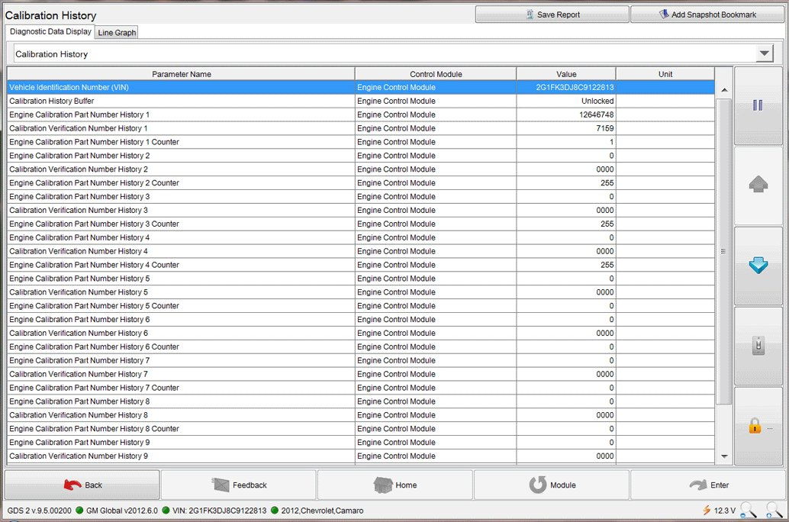

Section 6
6. Retrieving Calibration Information From Global A Vehicles Using GDS 2 - This Action is Required for ALL Service Agents (Model Dependent)Notice:
This information applies to Global A - GDS 2 compatible vehicles and is typical of the procedure that will be used.
1. Turn OFF the ignition.
2. Connect the MDI to the Data Link Connector (DLC) of the vehicle.
Notice:
Use the USB port to make the following MDI connection:
3. Connect the MDI to a PC or laptop that has been downloaded with the GDS 2 application from TIS2WEB.
Notice:
At least one Diagnostic Package must be installed on the PC to perform diagnostics. If GDS 2 was just installed, select: Add New Diagnostic Package and then select a: Diagnostic Package to download.
4. Select: GDS 2 icon on the PC.
5. Select: Diagnostics icon.
6. Select: serial number of the MDI being used.
7. Select: Enter icon.
8. Select: Module Diagnostics.
9. Select: Engine Control Module.
Notice:
Due to the model selected, vehicle build, software and RPO variations, GDS 2 may ask for additional information in Step 10.
10. Select: Engine ID, if prompted.
11. Select: ID Information.
12. The Diagnostics page will appear.

13. Notice: This is a typical view of a GDS 2 Calibration History Events Screen. GDS 2 is capable of displaying up to 10 Calibration History Events.
Select: Calibration History from the drop down menu in order to display the following items on the screen, including the VIN:
^ Calibration History Buffer
^ Number of Calibration History Events Stored
^ Calibration Part Number History
^ Calibration Verification Number History
14. Select: Save Report.
15. Select: Print.
Notice:
It is recommended that an electronic copy of the GDS 2 Calibration History also be saved. Refer to Section: 7. Creating a JPEG (.jpg) File From a GDS 2 Calibration History Screen Shot Using Microsoft Paint
16. Retain a copy of the printed screen shot with the repair order.